2026年08月14日-18日 利尻島・礼文島
今まで稚内に自転車で5回訪問したことがあるが、そのたびに海の上に浮かぶ利尻富士を眺めているだけだった。
今回はその利尻富士に登ることを第一目標に利尻島に渡った。
結果的に晴天に恵まれて利尻富士登山だけでなく利尻島一周サイクリング、翌日に礼文島に渡ってスコトン岬まで往復、と大満足の山行、サイクリングとなった。
1日目 利尻島へ
行きは羽田から稚内への直行便(10:55出発, 12:45到着)に乗って稚内へ。
稚内空港に到着後、空港連絡バスでフェリーターミナルに13:30到着。
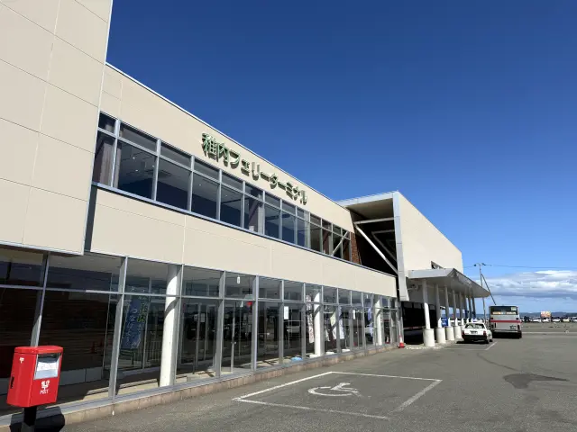
フェリーまで余裕があるのでターミナル周辺を散策して時間を潰す。
乗る予定の船が来たのでターミナルの乗り場へ移動。今回は3回ともこのボレアース宗谷だった。
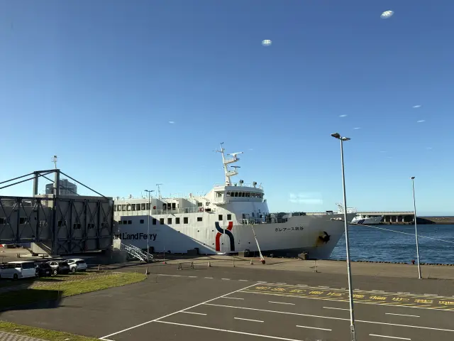
だんだん近づく利尻富士を眺めつつ約2時間の船旅。
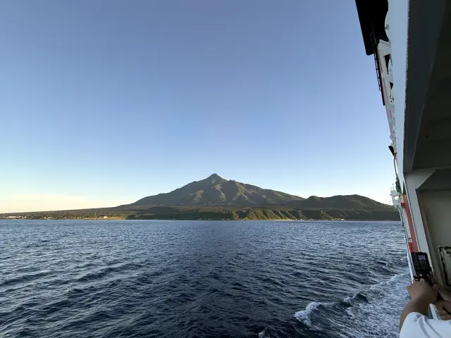
ほぼ定刻通りの18:20に鴛泊フェリーターミナルに到着。
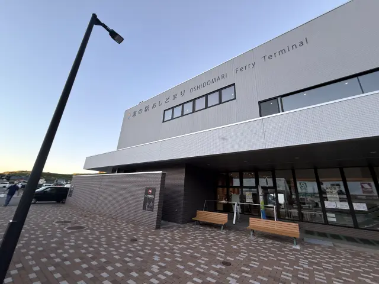
ただゆっくりしている時間はなく、キャンプ場のチェックインが19時までなので急いで徒歩でキャンプ場へ。
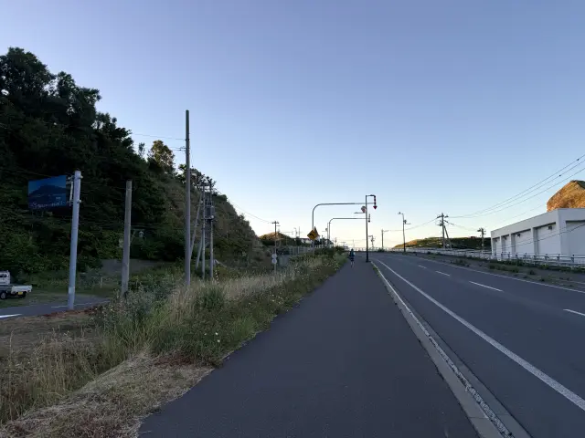
港から20分弱でファミリーキャンプ場ゆ〜にに到着。
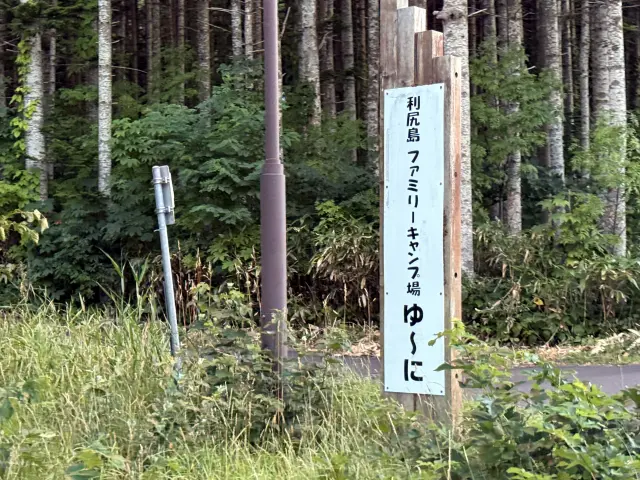
受付を済ませて暗くなる前にテントを設営。
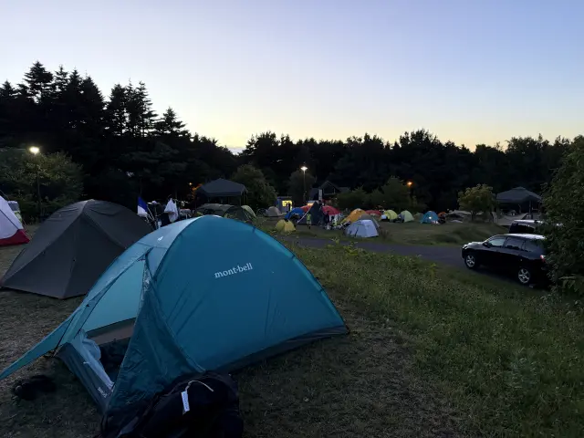
一通り準備を終えてから近くにあるセイコーマートで食料の買い出し。
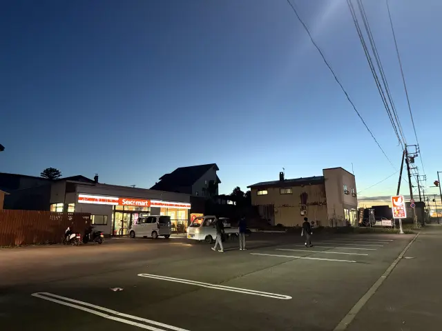
ガス缶も補給する予定だったがJET BOILに取り付けられる形状のものは売っておらず断念。
テント場に戻ると、後から私の隣にテントを設置した人が私のテントの出入り口を塞ぐようにテントを張っていて、その人の挙動も不安だったのでテントの場所を移動した。
2日目-1 利尻富士登山
2日目、起床して天候を確認すると晴天だったので、予定通り主目的の利尻山(利尻富士)への登山を決行。
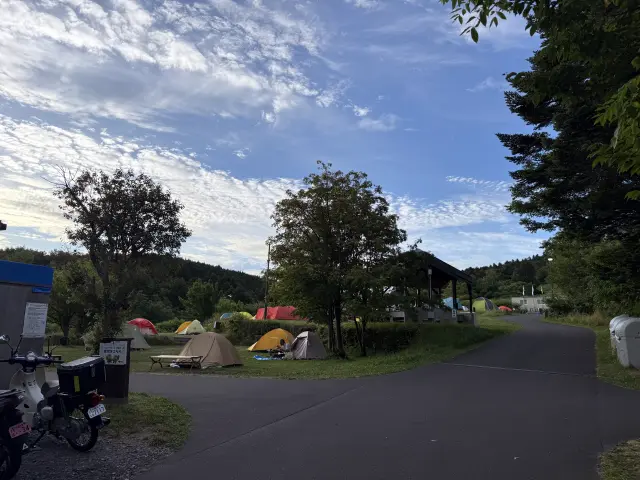
5時20分にキャンプ場を出発し、2kmほど舗装路を歩いて登山口へ。
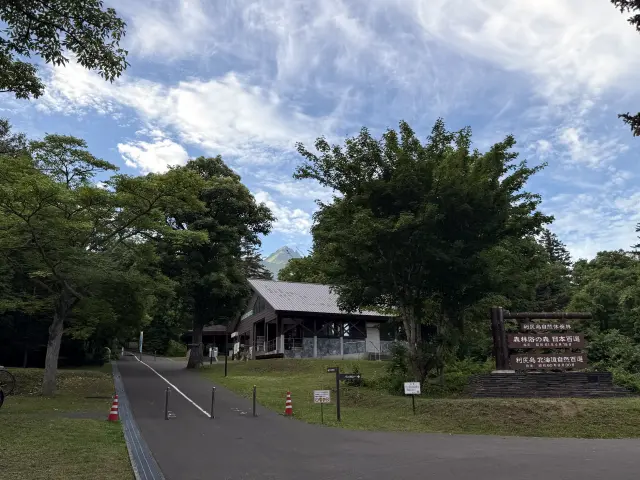
整備された遊歩道を入ってすぐに湧水の甘露泉水があるので1.5lほど汲んで、900mlのペットボトルのポカリスエットと合わせて2.4lほど持っていくことに。
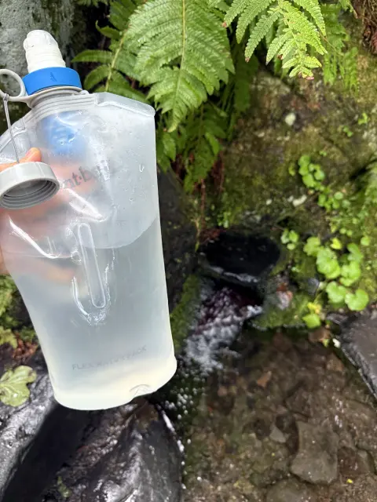
しばらくは樹林帯の中の緩い上りを淡々と歩く。
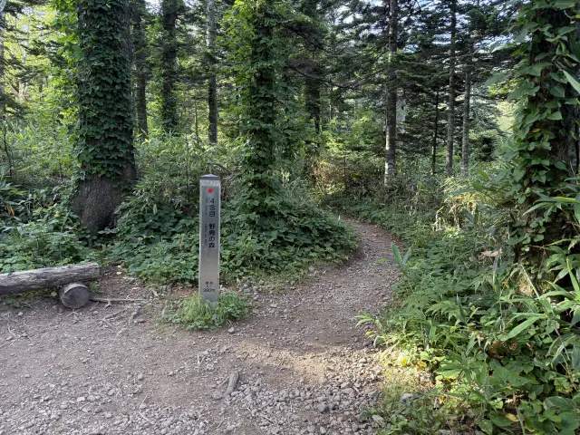
5合目付近からハイマツ帯になって眺望が開けてきた。
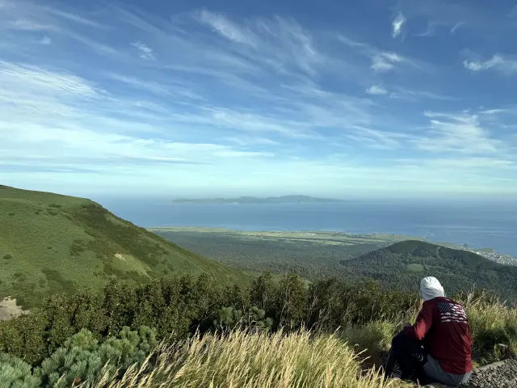
花もたくさん咲いていたが、残念なことに詳しくないのであまり分からず。あとで調べられるように撮影しつつ登る。
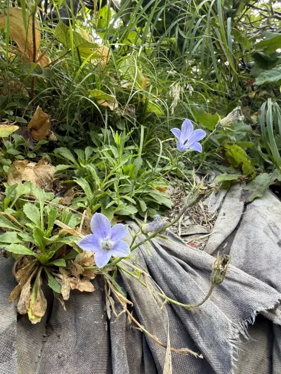
8合目付近からガスが出てきて若干あやしい雰囲気。
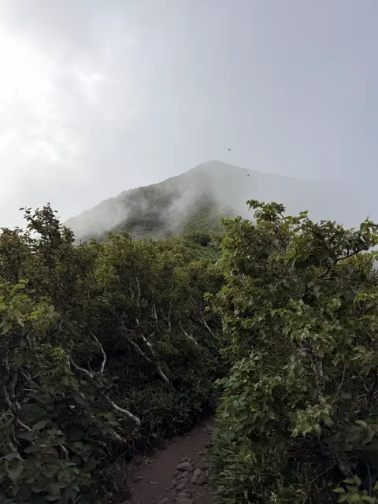
9合目ではガスで頂上がだいぶ霞むように。
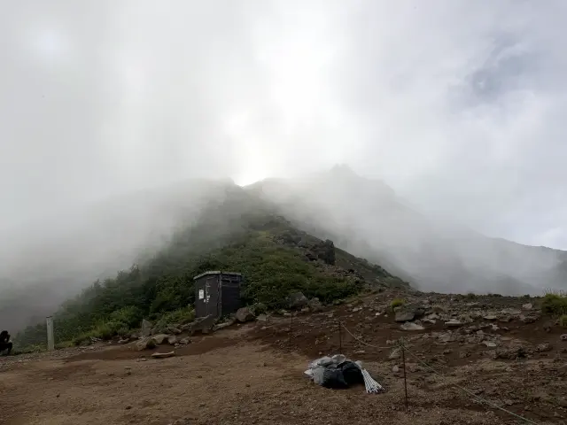
沓形コースは崩落のため通行止め。
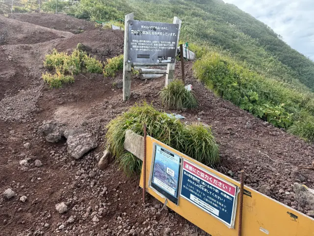
利尻山では登山道の崩落を防ぐためにいろんな活動が行われているらしく、土嚢のほかに下図のようなプラスチック製のパイプを縦に積んで中に土を詰めたものなどいろいろあった。
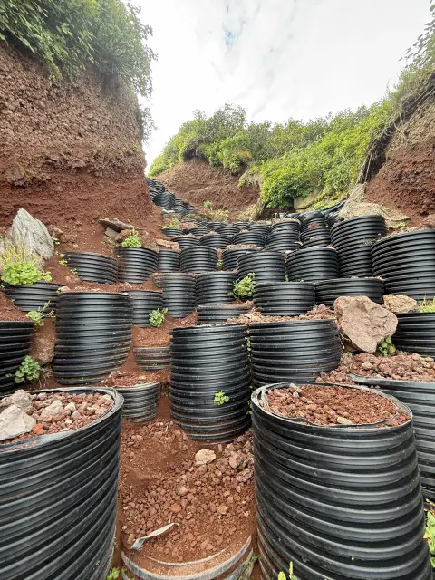
9合目から30分ほど、8時50分に利尻山に登頂。
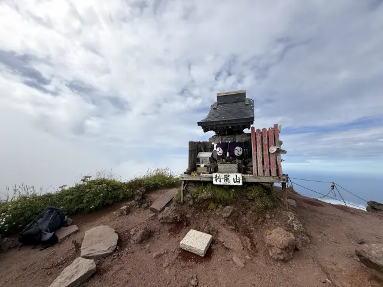
登頂した瞬間はガスが広がっていたが、10分ほど休憩がてら待っていたらガスに切れ間がでて360度の絶景を拝むことができた。
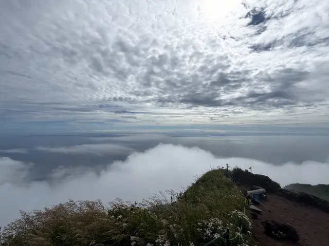 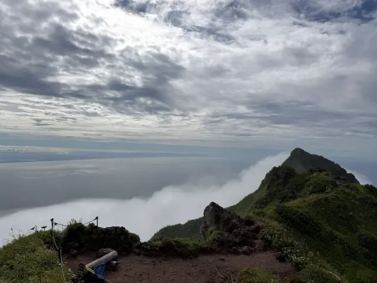
9時に下山開始し、12時15分にキャンプ場に帰還。
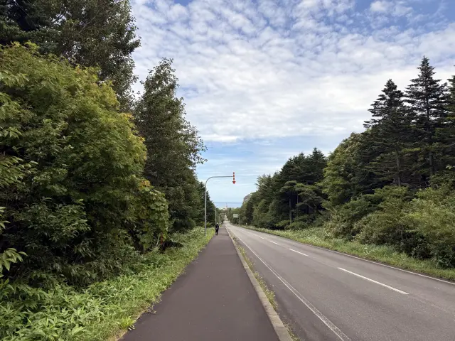
キャンプ場の向かいに温泉施設があるので、汗を流してさっぱりしてから着ていたものをコインランドリーで洗濯。
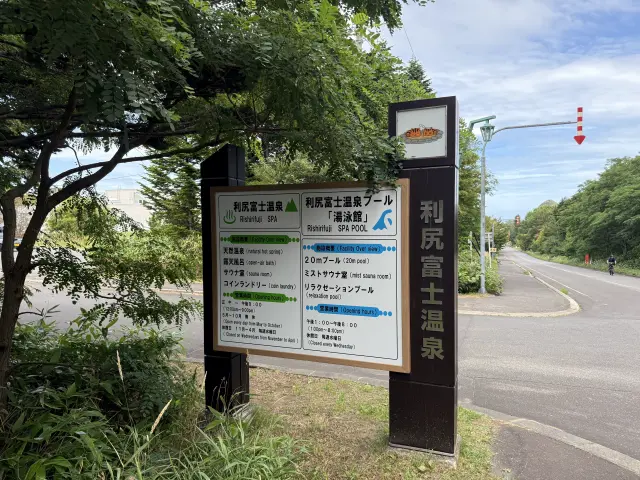
乾燥機の待ち時間の間、「さて、今日の午後が空いているが何するかな…」と考えたところ…
2日目-2 利尻島一周サイクリング
フェリーターミナルにレンタサイクルがあり、調べてみると車両が残っていた。
乾燥機が終わるのが14時過ぎ、1日レンタルの場合の返却期限が18時、島の周囲は約60km…
「十分間に合う」ということでレンタサイクルで利尻島一周してくることに。
乾燥機待ちの間に歩いてフェリーターミナルに行って自転車のレンタル手続きを済ませる。
借りたのは折りたたみの小径車。サドルを限界まで上げてギリギリポジションが出た。
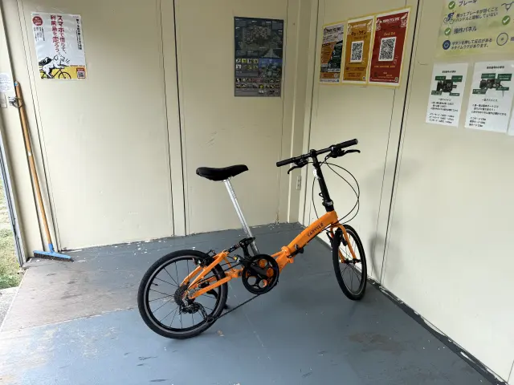
一旦コインランドリーに戻って乾燥機から洗濯物を回収して自分のテントに入れた後、必要なものだけ持ってサイクリングに出発。
半時計回りに回ることにしたので、常に左側に利尻富士が見える状態。
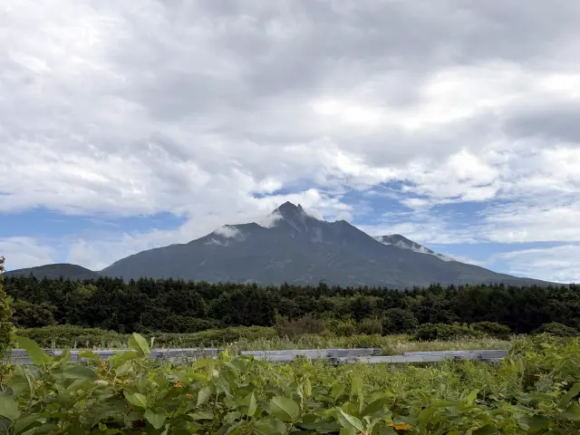
沓形との間では礼文島もくっきり。
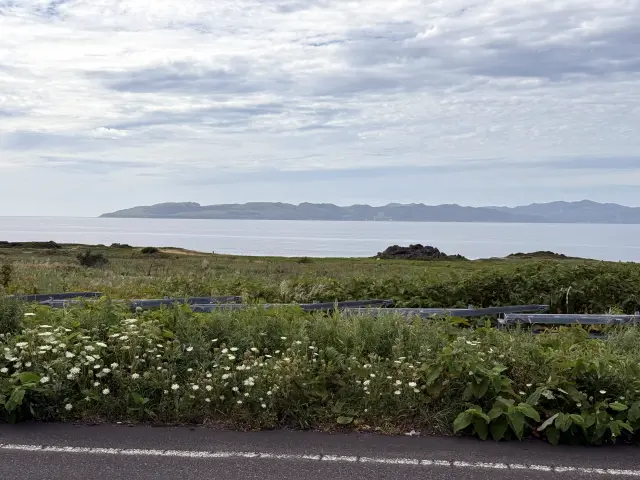
せっかくなので利尻島にある3件のセイコーマートすべてに寄ろう、ということでまずは沓形のセイコーマートでゼリーと飲み物を補給。
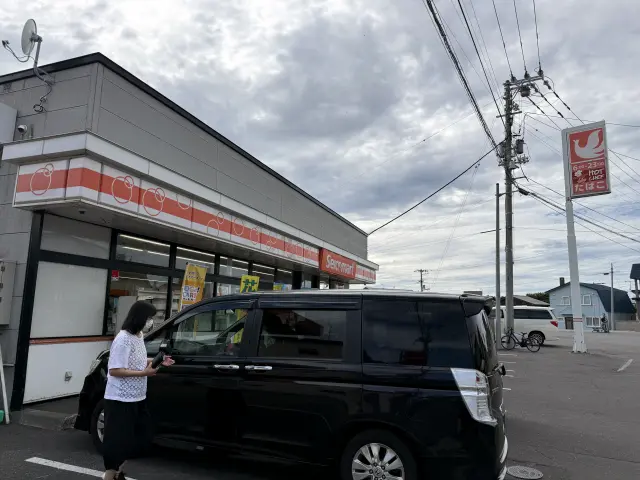
利尻島の西海岸は道北らしい荒涼とした雰囲気で良かった。
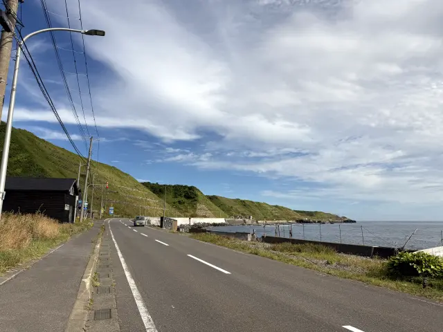
よくわからないが鳥居があって人も集まっていたので私も写真撮影。
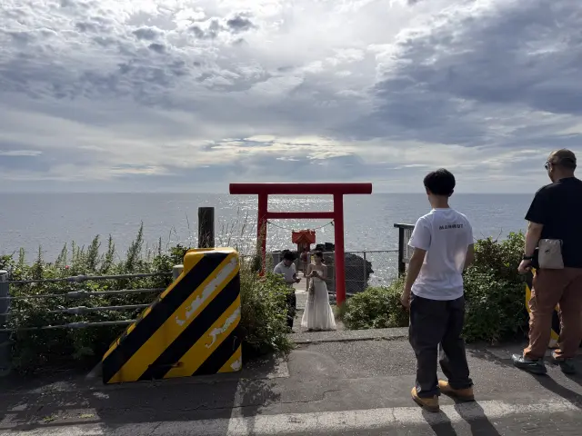
多少アップダウンはあるものの斜度が緩いので快適に走れる。
鴛泊からほぼ反対側の仙法志から見ると利尻山も表情が変わる。
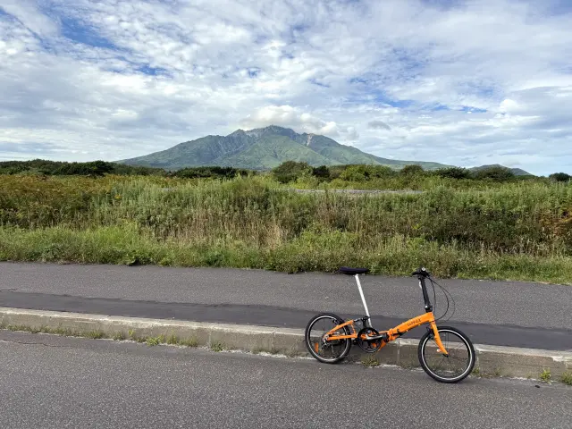
さらに少し進むとオタトマリ沼。
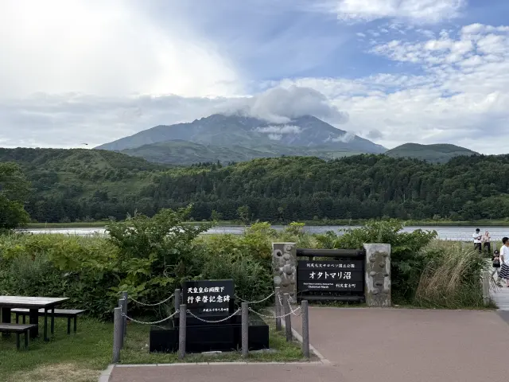
鬼脇集落の少し手前に3件目のセイコーマート。
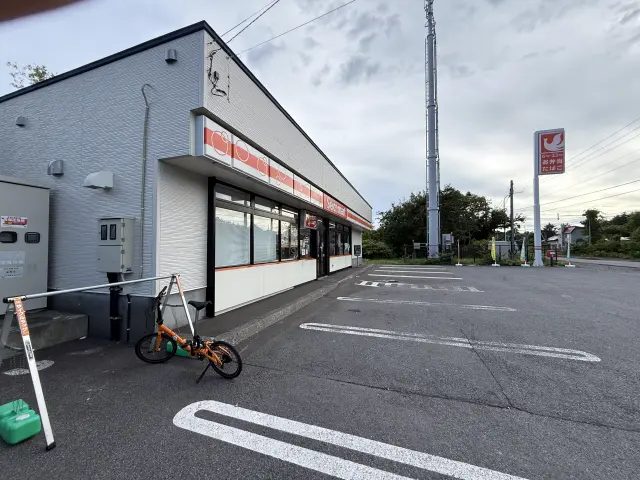
石崎灯台。
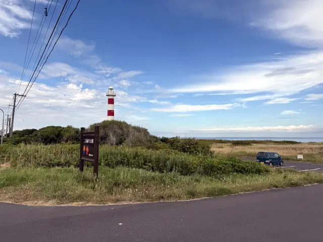
約60kmとのことだったが実際の走行距離は56kmほど、17時前に鴛泊に戻ってきた。
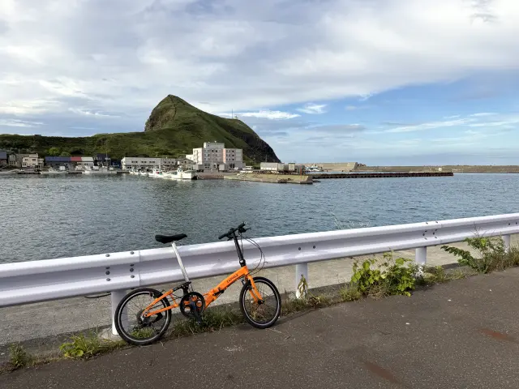
結局返却期限より1時間以上余裕を持って返却できた。
一日のうちに利尻山登山と利尻島一周サイクリングをやれば疲れるだろう、と思いながらテントに戻ったのだが、意外と疲れていなかったらしくテントの中でなかなか寝付けなかった。
3日目 礼文島
本来3日目は天候が悪かったときのための予備日だったが、2日目に利尻島でやりたいことをやりきってしまったので礼文島に渡ることに。
8時過ぎにテントを撤収してキャンプ場を後にした後、フェリーターミナルに向かって9時30分の利尻島→礼文島の船便に乗船。
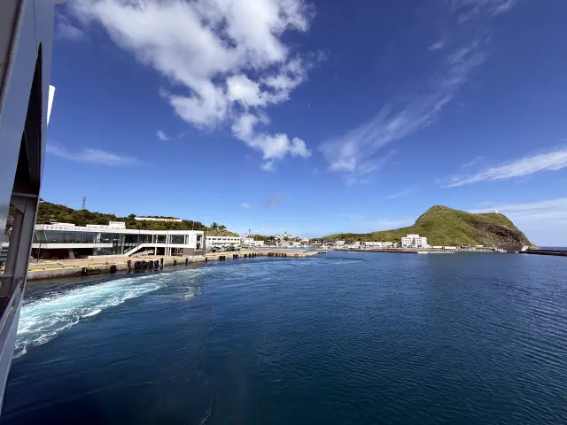
40分ほどで船は礼文島の香深港に到着。
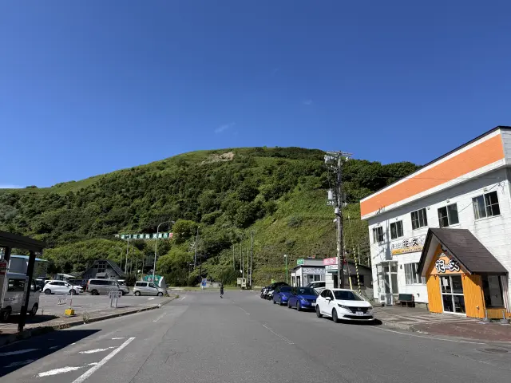 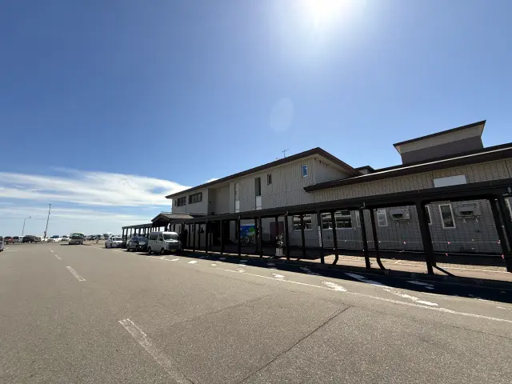
礼文島のレンタサイクルは事前予約不可、とのことなので下船後レンタサイクルショップに直行。
「明日の朝まで24時間レンタルしたい」旨を伝えたところ、ママチャリタイプのものしかないが、ということだったがレンタルに成功。
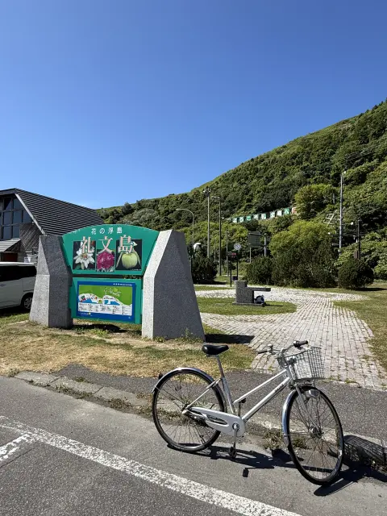
24時間レンタルできたので、本日の宿泊地は最北端のキャンプ場の久種湖畔キャンプ場に決定し、キャンプ場に行ってからスコトン岬まで往復することにした。
ただ、礼文島はそこまで大きい島ではなく時間にも余裕があるので、まずは島の南端に行くことに。
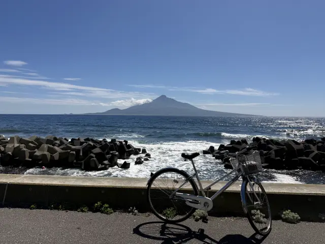
利尻富士を眺めつつ20分ほどで知床の道の終点に到着。
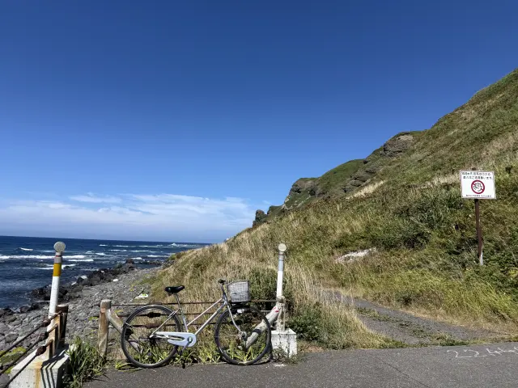
折り返して香深港を少し過ぎたところに礼文島唯一のセイコーマート。
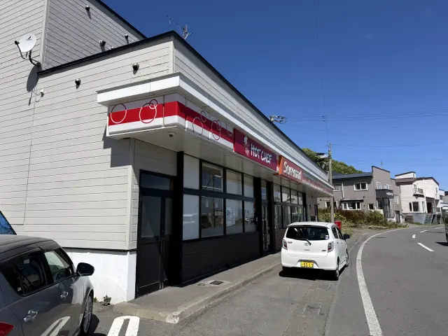
久種湖周辺にもお店はあるのだが、お盆ということで休みの可能性も考え、明日の朝までの水と食料を確保。
前カゴがあるので荷物の積載は楽チン。
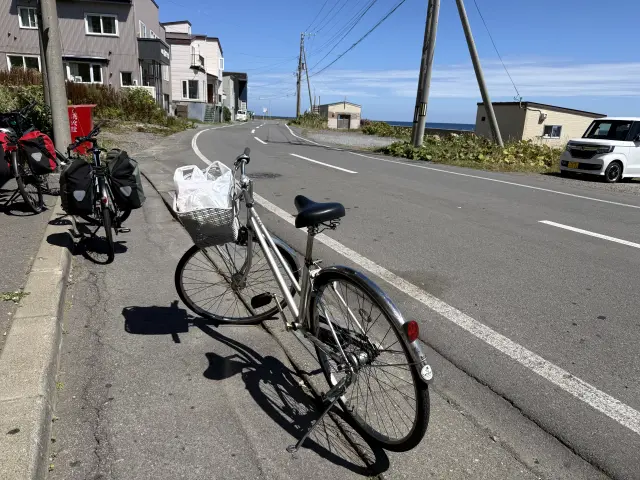
テント泊道具一式を背負っているので結構重いのだが、追い風のおかげでママチャリでも25 - 26km/hでスイスイ進む。
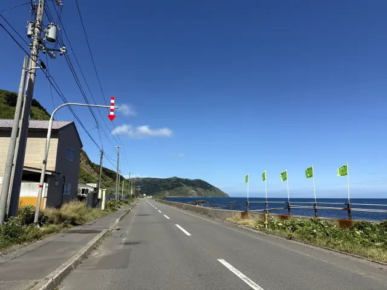
途中、おそらく日本最北となるハト標識を発見(ただし同じポールではなかった)。
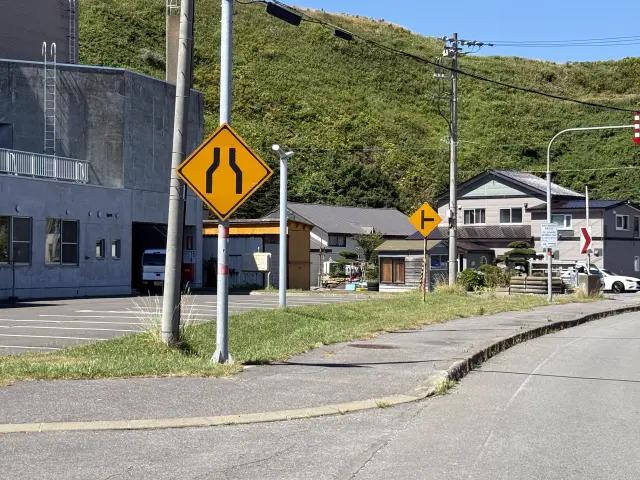
基本的に海岸沿いの平坦路なのだが、久種湖の手前に60mほどの峠があり、3段変速のママチャリでは明らかにギアが足りず苦労したが何とか足つきはせずにクリア。
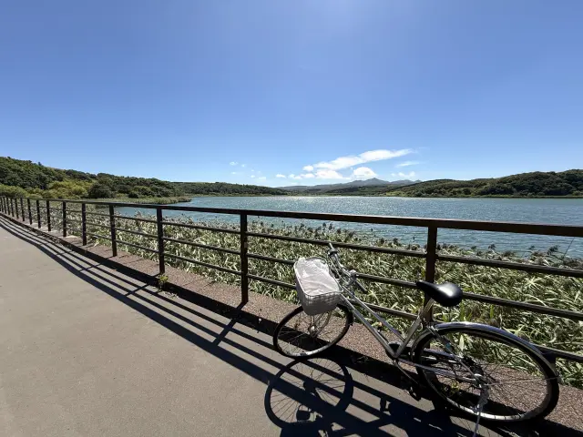
南端部から1時間25分ほど、12時に久種湖畔キャンプ場に到着。
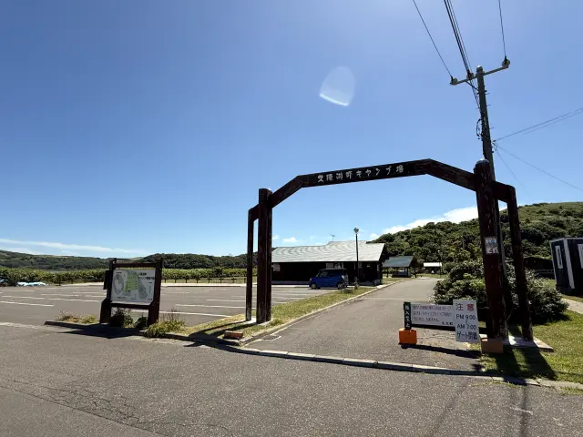 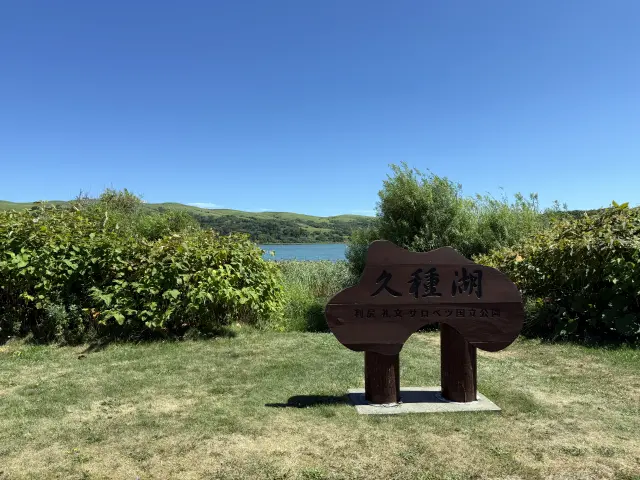
チェックインができたのでまずはテントを設営。
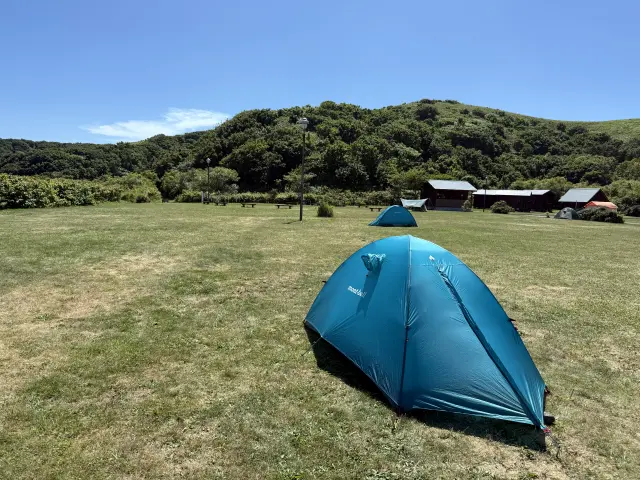
設営が済んだら身軽になった。ペットボトルだけ前カゴに入れて最北限のスコトン岬へ。
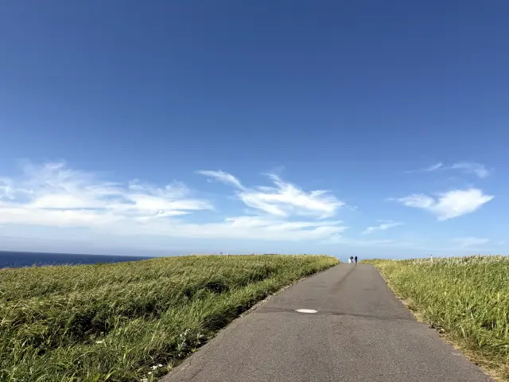
この日も天気が素晴らしく、スコトン岬からの絶景を眺めることができた。
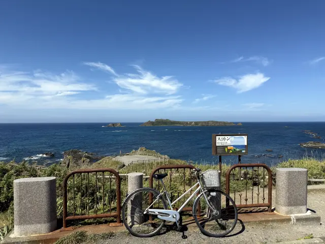
振り返ると礼文島の丘陵の上に利尻富士。どこから見ても目立つ。
13時半にキャンプ場に戻ったが、まだ時間があったので北東端にある金田ノ岬に。
途中、この付近で唯一のお店の船泊マリンストアーの前を通ったが休み。セイコーマートで買い出しして正解だった。
レブンアツモリソウの群生地なる地点も見つけたので行ってみたが、残念ながら今年の一般公開は終了だった。
キャンプ場に戻り、散策しつつのんびりと過ごす。
ネコもいたがいたずらをしてくるらしく警戒が必要とのこと。
4日目 稚内観光 - 帰宅
最終日の朝は4時30分に起床したが、ちょっと早く起きてしまったので外で日の出を待機。
5時30分にテントを撤収。
6時前に久種湖畔キャンプ場を出発。
昨日と変わって強烈な向かい風にやられつつ、8時前に香深港に到着。
レンタサイクルを返却してから8時55分の稚内行フェリーに乗船。
11時に稚内に到着。
空港行きバスは15時40分なので4時間半ほど時間があるので、適当に町中を歩いてみたところ大きな鳥居が見えたので北門神社に参拝してきた。
その後、ノシャップ岬にあるノシャップ寒流水族館に行ってみることに。
ノシャップ行のバスに乗って終点で降りるとあたりにシカがうようよ。
まずはノシャップ岬で写真撮影。
水族館の入館料は併設の稚内青少年科学館と合わせて500円。
入口入ってすぐにゴマフアザラシの餌やり体験ゾーン。
反対側にはフンボルトペンギン。
水族館は結構じっくり眺めて回ったが30分ほどで一周。
続いて併設の稚内青少年科学館へ。
南極関連の展示が思ったより面白かった。
科学館は20分少々、水族館と合わせて1時間弱で回りきった。
13時過ぎ、漁師の店というところで食事。ちょっと遅めの昼食だったが、結果的にこのあと晩御飯を食べる時間がなくなったので幸いした。
バスで稚内駅に戻って空港行きバスを待っていたところ、スマホに稚内→新千歳の飛行機が遅延するとの通知が(出発時刻が17:00から18:40に)。
帰りは直行便があまりにも高かったので稚内→新千歳だけ先に抑えておいて、後から新千歳→羽田を別に予約を取っていたのだが、稚内→新千歳が遅れることで新千歳→羽田の出発に間に合わなくなってしまった(新千歳で晩御飯を食べるつもりで乗り継ぎには1時間半ほど余裕を見ていたのだが)。
しょうがないので取り敢えず空港行きのバスに乗って空港についたらすぐに有人カウンターの列に並んだのだが、大行列でまったく進まず。
調べてみると
- 13時30分の稚内→羽田の直行便(ANA572)が機材トラブルで欠航
- 乗れなくなった乗客を稚内→新千歳に振り替え
- 稚内⇔新千歳は本来74席のプロペラ機の予定だったが振り替え客の座席容量が不足
- 急遽、新千歳→稚内を166席のジェット機に機材を変更したため、新千歳出発時刻に遅れが発生
- その折返しである稚内→新千歳も遅延発生
ということらしい。
「まあテント泊装備も持ってるし、稚内だろうが千歳だろうがどこでも寝れるな」と思いつつ会社に「明日出社できないかもしれない」と連絡していたところ、なんと新千歳→羽田も25分ほど遅延する、との通知が入ってきて、乗り継ぎが間に合う可能性が出てきた。
間に合うかも、といっても乗り継ぎ時間は20分しかなく、乗り継げるかどうかはカウンターでANAの人に聞いてみないことにはわからないのでひたすら列で並んで待っていた。
出発予定時刻の10分前の18時30分にようやく自分の番が来たので職員さんに説明したところ「乗り継げます」とのことだったので荷物を預けて搭乗手続きを済ませ、慌ただしく搭乗。
新千歳でも足早に乗り継ぎを行って20時発の羽田行きに搭乗。
新千歳空港での短時間で自分の荷物がきちんと積み替えられたのか少し不安になったものの、 羽田空港着陸後にターンテーブルから無事に出てきてホッとした。
最終的に23時頃に帰宅することができた。